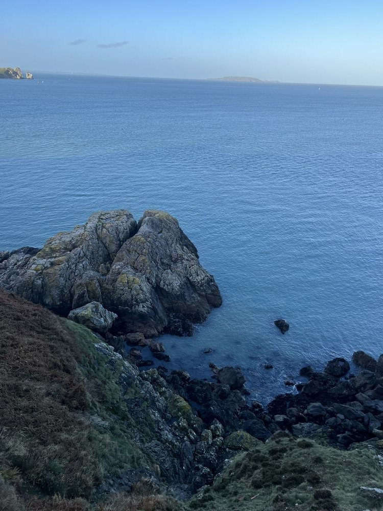
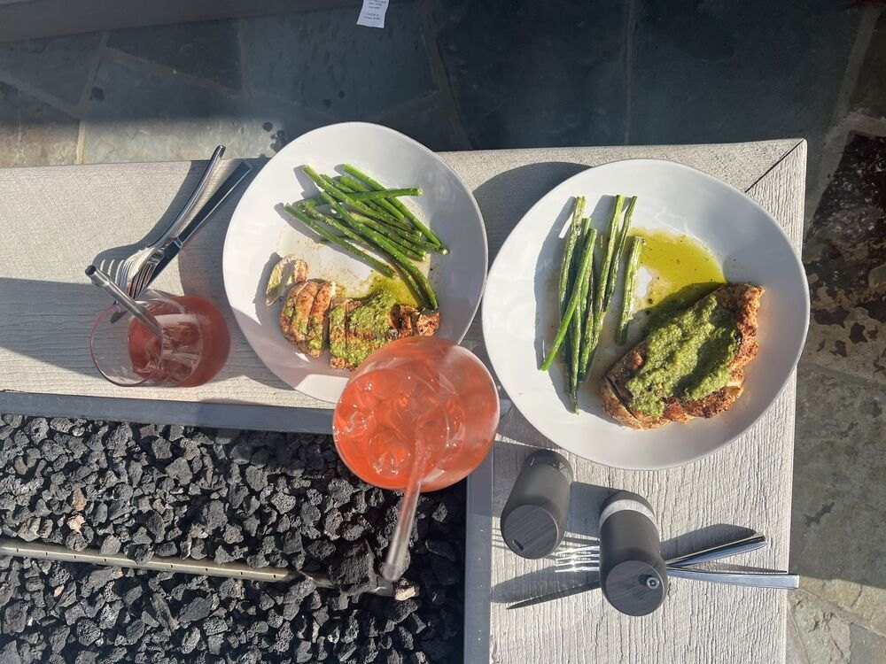

A little about me.
I'm Bella. I graduated from SMU in 2026 with degrees in Economics with Financial Applications and Fashion Media, and I live in the San Francisco Bay Area.
Right now I'm in field sales at The RealReal, where I find and sign new clients and work toward a monthly target. Before that I built a realtor outreach program at ReSupply, ran the inventory analysis behind a sales push at Sai Sankoh, rebuilt the website for SMU's fashion magazine, and spent a summer at a PR firm in London.
My favorite projects have needed both halves of my degree: talking to people, and then figuring out what the numbers say.
- Education
- Southern Methodist University, 2026
- B.S. Economics with Financial Applications · B.A. Fashion Media
- Based
- San Francisco Bay Area
- Raised in Northern California
- Tools I've Used
- Salesforce · Excel · Google Sheets · Google Analytics · Shopify · Meta Ads · Later · Notion · WordPress · HTML & CSS · GitHub · Adobe Creative Suite · CapCut · Claude · ChatGPT · Gemini
View Résumé
When I Am Off the Clock.
I grew up in Northern California, and my go-to fun fact is that I'm a twin! I have a perpetual case of the travel bug and love a quick weekend trip. I went to SMU in Dallas (Pony Up!) and was lucky enough to study abroad in London twice, which I loved both times.
When I'm not traveling, you can usually find me outside, whether that's hiking, at the beach, or in the garden. The garden feeds my love of food too, and in an ideal world I'd live completely farm-to-table.
I'm always trying new restaurants and keeping a running list of places to go. If you want proof, find me on Beli as @isabellastryker.






Get in Touch
If you're hiring for product or sales, I'd love to hear from you.
hello@bellastryker.com Write to Me →